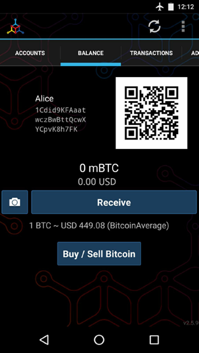
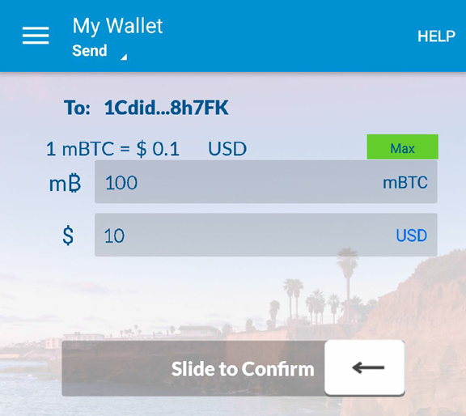

BitCoin Intro
-
What is BitCoin?
Collection of concepts and technologies that form the basis of a digital money ecosystem.
Units of currency called bitcoin are used to store and transmit value among participants in the bitcoin network.
Bitcoin users communicate with each other using the bitcoin protocol primarily via the internet
The bitcoin protocol stack, available as open source software, can be run on a wide range of computing devices, including laptops and smartphones
BitCoin Generation
Bitcoin is a distributed, peer-to-peer system. There is no ¡°central¡± server or point of control.
Bitcoin are created through a process called ¡°mining,¡± which involves competing to find solutions to a mathematical problem while processing bitcoin transactions. Any participant in the bitcoin network (i.e., anyone using a device running the full bitcoin protocol stack) may operate as a miner, using their computer¡¯s processing power to verify and record transactions. Every 10 minutes, on average, someone is able to validate the transactions of the past 10 minutes and is rewarded with brand new bitcoin. Essentially, bitcoin mining decentralizes the currency-issuance and clearing functions of a central bank and replaces the need for any central bank.
The bitcoin protocol includes built-in algorithms that regulate the mining function across the network. The difficulty of the processing task that miners must perform is adjusted dynamically so that, on average, someone succeeds every 10 minutes regardless of how many miners (and how much processing) are competing at any moment. The protocol also halves the rate at which new bitcoin are created every 4 years, and limits the total number of bitcoin that will be created to a fixed total just below 21 million coins. The result is that the number of bitcoin in circulation closely follows an easily predictable curve that approaches 21 million by the year 2140. Due to bitcoin¡¯s diminishing rate of issuance, over the long term, the bitcoin currency is deflationary. Furthermore, bitcoin cannot be inflated by ¡°printing¡± new money above and beyond the expected issuance rate.
Bitcoin consists of:
* A decentralized peer-to-peer network (the bitcoin protocol) * A public transaction ledger (the blockchain) * A set of rules for independent transaction validation and currency issuance (consensus rules) * A mechanism for reaching global decentralized consensus on the valid blockchain (Proof-of-Work algorithm) -
History of Bitcoin
Bitcoin was invented in 2008 with the publication of a paper titled ¡°Bitcoin: A Peer-to-Peer Electronic Cash System,¡±1 written under the alias of Satoshi Nakamoto (see Appendix A). Nakamoto combined several prior inventions such as b-money and HashCash to create a completely decentralized electronic cash system that does not rely on a central authority for currency issuance or settlement and validation of transactions. The key innovation was to use a distributed computation system (called a ¡°Proof-of-Work¡± algorithm) to conduct a global ¡°election¡± every 10 minutes, allowing the decentralized network to arrive at consensus about the state of transactions.
The bitcoin network started in 2009, based on a reference implementation published by Nakamoto and since revised by many other programmers. The implementation of the Proof-of-Work algorithm (mining) that provides security and resilience for bitcoin has increased in power exponentially, and now exceeds the combined processing power of the world¡¯s top supercomputers. Bitcoin¡¯s total market value has at times exceeded $20 billion US dollars, depending on the bitcoin-to-dollar exchange rate. The largest transaction processed so far by the network was $150 million US dollars, transmitted instantly and processed without any fees.
Satoshi Nakamoto withdrew from the public in April 2011, leaving the responsibility of developing the code and network to a thriving group of volunteers. The identity of the person or people behind bitcoin is still unknown. However, neither Satoshi Nakamoto nor anyone else exerts individual control over the bitcoin system, which operates based on fully transparent mathematical principles, open source code, and consensus among participants. The invention itself is groundbreaking and has already spawned new science in the fields of distributed computing, economics, and econometrics.
C
-
Bitcoin Wallet
Bitcoin is a protocol that can be accessed using a client application that speaks the protocol. A ¡°bitcoin wallet¡± is the most common user interface to the bitcoin system
Categorization of Bitcoin Wallet:
* Desktop wallet : First type of bitcoin wallet. Runs on Win or Mac. Insecure. * Mobile wallet : Most common type. Runs on smartphone os such as iOS and Android. * Web wallet : Access thru browser. Stores user's wallet on server owned by 3rd party. * Hardware wallet : Devices that operate a secure self-contained wallet on special-purpose hardware. Very secure. * Paper wallet : Keys controlling bitcoins are printed for long-term storage. Offline (cold) storage. * Full-node wallet: Full client or "full node", a client that stores the entire history of bitcoin transactions (every transaction by every user, ever), manages users¡¯ wallets, and can initiate transactions directly on the bitcoin network. A full node handles all aspects of the protocol and can independently validate the entire blockchain and any transaction. A fullnode client consumes substantial computer resources (e.g., more than 125 GB of disk, 2 GB of RAM) but offers complete autonomy and independent transaction verification. * Lightweight client: Also known as simple-payment-verification (SPV), connects to bitcoin full nodes for access to the bitcoin transaction information. Lightweight clients interact directly with the bitcoin network, without an intermediary. * Third-party API client: Interacts with bitcoin thru a 3rd party system of API. The wallet may be stored by user or by 3rd party servers, but all transactions go thru a 3rd party.Main focus of the book: Bitcoin Core; Mobile Wallet; Web Wallet.
-
Get Start

Alice installed Android Bitcoin Wallet Myceliumbitcoin address: long string of letters and numbers: 1Cdid9KFAaatwczBwBttQcwXYCpvK8h7FK. Next to the wallet¡¯s bitcoin address is a QR code, a form of barcode that contains the same information in a format that can be scanned by a smartphone camera.
Bitcoin addresses start with a 1 or 3. Like email addresses, they can be shared with other bitcoin users who can use them to send bitcoin directly to your wallet. There is nothing sensitive, from a security perspective, about the bitcoin address. It can be posted anywhere without risking the security of the account. Unlike email addresses, you can create new addresses as often as you like, all of which will direct funds to your wallet. In fact, many modern wallets automatically create a new address for every transaction to maximize privacy. A wallet is simply a collection of addresses and the keys that unlock the funds within.
Channels to buy bitcoins:
* Find a friend who has bitcoin and buy some from him or her directly. Find people on Meetup * Use a classified service such as localbitcoins.com to find a seller in your area to buy bitcoin for cash in an in-person transaction: * Earn bitcoin by selling a product or service for bitcoin
* Use a bitcoin ATM in your city. A bitcoin ATM is a machine that accepts
cash and sends bitcoin to your smartphone bitcoin wallet. Find a bitcoin
ATM close to you using an online map from Coin ATM Radar:
* Earn bitcoin by selling a product or service for bitcoin
* Use a bitcoin ATM in your city. A bitcoin ATM is a machine that accepts
cash and sends bitcoin to your smartphone bitcoin wallet. Find a bitcoin
ATM close to you using an online map from Coin ATM Radar:
 * Use a bitcoin currency exchange linked to your bank account. Many
countries now have currency exchanges that offer a market for buyers and
sellers to swap bitcoin with local currency. Exchange-rate listing
services, such as BitcoinAverage, often show a list of bitcoin exchanges
for each currency:
* Use a bitcoin currency exchange linked to your bank account. Many
countries now have currency exchanges that offer a market for buyers and
sellers to swap bitcoin with local currency. Exchange-rate listing
services, such as BitcoinAverage, often show a list of bitcoin exchanges
for each currency:
 *
*
S
-
Find current price of Bitcoin
Bitcoin Average A site that provides a simple view of the volume-weighted-average for each currency.
CoinCap A service listing the market capitalization and exchange rates of hundreds of crypto-currencies, including bitcoin.
Chicago Mercantile Exchange Bitcoin Reference Rate A reference rate that can be used for institutional and contractual reference, provided as part of investment data feeds by the CME.
S
C
-
Sending and Receiving Bitcoin

Joe scanned Alice's QR Code and initiate the transferThe wallet will:
* construct a transaction assigning 0.1 BTC to Alice's address * sourcing the funds from Joe¡¯s wallet and signing the transaction with Joe¡¯s private keys. This tells the bitcoin network that Joe has authorized a transfer of value to Alice¡¯s new address. * The transaction is transmitted via the peer-to-peer protocol, it quickly propagates across the bitcoin network. In less than a second, most of the well- connected nodes in the network receive the transaction and see Alice¡¯s address for the first time. * Meanwhile, Alice¡¯s wallet is constantly ¡°listening¡± to published transactions on the bitcoin network, looking for any that match the addresses in her wallets. * A few seconds after Joe¡¯s wallet transmits the transaction, Alice¡¯s wallet will indicate that it is receiving 0.10 BTC.At first, Alice¡¯s address will show the transaction from Joe as ¡°Unconfirmed.¡± This means that the transaction has been propagated to the network but has not yet been recorded in the bitcoin transaction ledger, known as the blockchain. To be confirmed, a transaction must be included in a block and added to the blockchain, which happens every 10 minutes, on average. In traditional financial terms this is known as clearing.
C
-
Get Start
Android Bitcoin Wallet MyceliumB
T
S
C